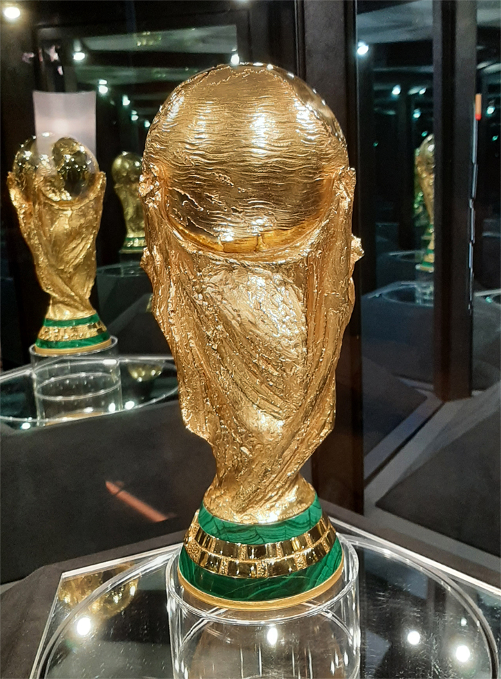
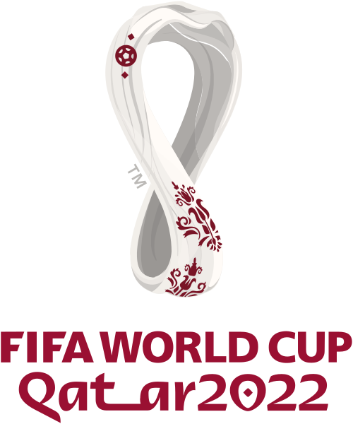

О сайте
Этот сайт посвящён финалам чемпионатов мира по футболу, которые прошли в XXI веке — с 2002 по 2026 год. Здесь собраны обзоры решающих матчей, статистика, портреты легендарных игроков и краткая история каждого финала.

Чемпионат мира по футболу — главное соревнование национальных сборных, которое проводится под эгидой ФИФА раз в четыре года. Первый турнир состоялся в 1930 году в Уругвае. В XXI веке финалы принимали Япония и Южная Корея (2002), Германия (2006), ЮАР (2010), Бразилия (2014), Россия (2018), Катар (2022) и США, Канада и Мексика (2026). Каждый финал — это отдельная история, полная драмы, голов на последних минутах, серий пенальти и великих сейвов.
Разделы сайта
В меню слева находятся ссылки на основные разделы проекта. В разделе «История финалов» собрана таблица всех финалов XXI века с результатами и местами проведения. В разделе «Обзоры финалов» — подробные описания каждого матча. Также на сайте сохранены учебные задания по вёрстке и курсовая работа.

Особое внимание уделено финалу 2022 года в Катаре, где Аргентина обыграла Францию в серии пенальти после счёта 3:3. Лионель Месси наконец получил Кубок мира, а Килиан Мбаппе оформил хет-трик в финале — впервые с 1966 года. Этот матч многие эксперты называют лучшим финалом в истории чемпионатов мира.
Легендарные финалы

Финал 2006 года в Берлине вошёл в историю не только победой Италии в серии пенальти, но и удалением Зинедина Зидана в его последнем матче за сборную Франции. Капитан французов, открывший счёт с пенальти, был удалён за удар головой в грудь Марко Матерацци. Италия, несмотря на потерю контроля над игрой в дополнительное время, оказалась точнее в серии одиннадцатиметровых — 5:3. Для Франции это поражение стало вторым финальным проигрышем подряд после 1998 года, когда команда побеждала.

Финал 2018 года в Москве стал самым результативным с 1966 года: Франция обыграла Хорватию со счётом 4:2. На «Лужниках» Антуан Гризманн открыл счёт с пенальти, Поль Погба и Килиан Мбаппе укрепили преимущество, а Марио Манджукич отметился автоголом и голом в чужие ворота. Мбаппе стал вторым подростком после Пеле, забившим в финале чемпионата мира. Хорватия же впервые в истории дошла до решающего матча и была встречена на родине как национальный герой.
Финалы 2006 и 2014 годов запомнились дополнительным временем и единственным голом. В 2006-м Зинедин Зидан был удалён в своём последнем матче за сборную, а Италия победила в серии пенальти. В 2014-м Марио Гётце принёс Германии победу над Аргентиной на 113-й минуте.